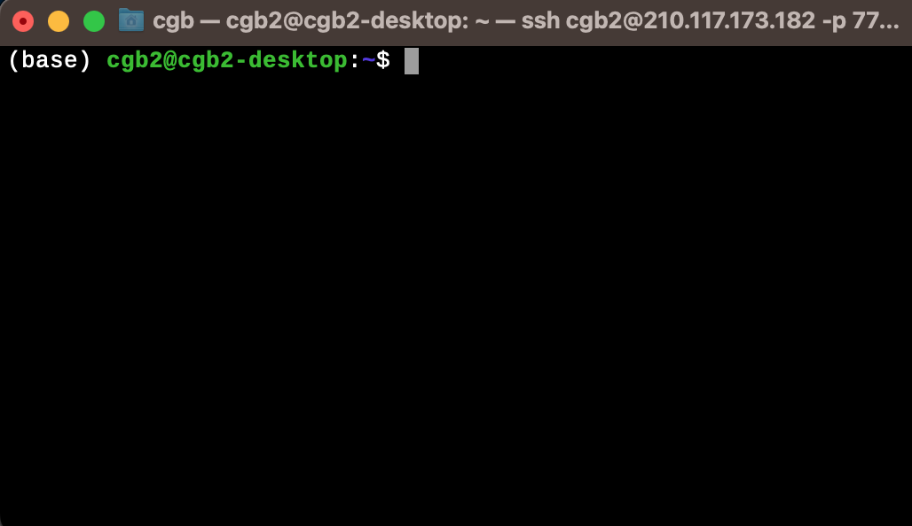

1. 준비
- 윈도우 컴퓨터인 경우 새로운 계정을 만들어 준다.
- 한글계정명일 경우는 필수
- 영어계정이더라도 계정을 분리하는게 관리에 유리
- 최종적으로는
- github 로그인 + repository 생성완료
- anaconda 설치완료
- git 설치완료
- quarto 설치완료
이어야 한다.
A. Github
- github 로그인
- repository 생성 (저는 asdf로 만들었어요)
주의: repository 만들때 readme.md 파일을 생성 할 것. 그래야 이후의 작업이 편리.
B. Anaconda
- 아나콘다 다운로드: https://www.anaconda.com/download
- 아나콘다 설치
- 그림1처럼 terminal을 열었을 경우 (base)로 표시되는지 확인
- 그림2처럼
conda env list등의 명령어가 잘 동작하는지 확인
그림1

그림2
C. Git
- git 다운로드: https://git-scm.com/downloads
- 설치
- terminal에서
git을 입력하여 정상적으로 설치되었는지 확인. 그림3 참고.
본인이 편리한 경우 github desktop 혹은 sourcetree 등에서 작업해도 무방함. 하지만 수업에서는 다루지 않음.
D. Quarto
- quarto 다운로드: https://quarto.org/docs/download/ 에서 pre-release 버전을 다운로드 할 것 (기능이 좀 더 많음)
- 설치
- 터미널에서
quarto help를 입력하여 정상적으로 설치되었는지 확인. 그림4 참고.
2. 가상환경 설정
- 가상환경 만들기, activate, 주피터랩 설치
conda create -n mp python=3.10 # 가상환경만들기
conda activate mp # 가상환경 activate
conda install -c conda-forge notebook # 주피터노트북(=랩과 통합됨) 설치 - 주피터랩 실행
3. Local \(\leftrightarrow\) Github
- 깃헙레포지토리 접속
- 주소복사. 그림5 참고. 그림5의 화면이 나오지 않는다면 레포지토리를 잘 못 만든 것임
- 터미널을 열고 clone
클론이 정상적으로 되었다면 레포지토리 명의 폴더가 생성됨 (이 예시의 경우 asdf 폴더)
- 클론된 폴더에서 readme.md 파일을 수정
- local(개인컴퓨터)에서 github으로 변경사항 업로드
4. 블로그 생성
- 깃헙레포지토리로 이동한뒤에 아래의 명령어를 입력:
위의 명령어를 실행하면 여러가지 설정파일들이 생성된다.
- 블로그 publish
- 깃헙으로 이동하여 확인
- window는 자동으로 퍼블리쉬 된다.
- mac에서는 수동으로 gh-pages로 바꿔야함.
5. 새로운 포스트 생성
- 아무 노트북이나 만들어본다. (혹은 이미 만들어진 노트북을 넣어본다.)
- 예시1: https://guebin.github.io/PP2023/ 에서 아무거나 다운로드
- 예시2:
git clone https://github.com/guebin/PP2023.git
- 노트북을 posts 폴더에 넣는다.
- 아래를 통하여 preview 이미지를 확인.
- 퍼블리쉬
6. 블로그 설정변경
- index.qmd 메인에 보이는 화면
---
title: "기계학습활용 (2023)"
listing:
contents: posts
sort: "date"
type: table
categories: true
sort-ui: false
filter-ui: false
page-layout: full
title-block-banner: false
---
**질문하는 방법**
- 카카오톡: [질문하러 가기](http://pf.kakao.com/_skxnxdG/chat) // 학기종료이후 폐쇄함
- 이메일: <guebin@jbnu.ac.kr>
- 직접방문: 자연과학대학 본관 205호
- Zoom: *카카오톡이나 이메일로 미리 시간을 정할 것*
- LMS쪽지: <https://ieilms.jbnu.ac.kr/>
**references**
**공지사항**
- 강의영상의 경우 시간이 지나면 고화질로 시청할 수 있습니다. (인코딩중에는 유튜브에서 저화질로 송출됩니다)
- **9월7일 대면수업**: Quarto를 이용한 기술블로그 만들기 + 타이타닉 자료에 대한 발표/토론
**강의노트** - _quarto.yml
project:
type: website
website:
title: "MP2023"
navbar:
right:
- icon: github
href: https://github.com/guebin/MP2023
- icon: youtube
href: https://www.youtube.com/channel/UCQk9RyBNgXc7ORIsYlOfQrg/playlists?view=50&sort=dd&shelf_id=2
format:
html:
theme: cosmo
css: styles.css- posts 폴더에서 _metadata.yml
# options specified here will apply to all posts in this folder
# freeze computational output
# (see https://quarto.org/docs/projects/code-execution.html#freeze)
execute:
freeze: auto # re-render only when source changes
# Enable banner style title blocks
title-block-banner: false
notebook-links: true
cap-location: margin
reference-location: margin
citation-location: margin
format:
html:
toc: true
code-fold: false
code-line-numbers: false
code-copy: true
ipynb: default- 기타 자세한 옵션은 아래에서 뒤져볼 것
- ref: https://quarto.org/
7. 이해
- 아래를 입력
- 폴더내용 확인
- 다시 원래대로 돌아오기
- quarto publish 의 역할
.ipynb파일을 어떠한 규칙에 따라 변환하여.html파일로 바꿈- 바꾼 파일들을
gh-pages라는 이름의 브랜치로 옮김 gh-pages브랜치를 github 으로 push- 이후에는 github이 알아서
gh-pages의 내용을 웹이 뿌려줌.
- 블로그가 깨졌을때 대응하는 방법
- gh-pages로 이동하여 모든 파일 및 폴더 삭제
git add .,git commit -m .git push를 순서대로 입력- 다시 main으로 돌아와서
quarto publish --no-prompt입력
8. 추천하는 루틴
- 정상적인 상황
- 포스트 제목 등, 블로그의 수정사항이 바르게 반영되지 않는 상황